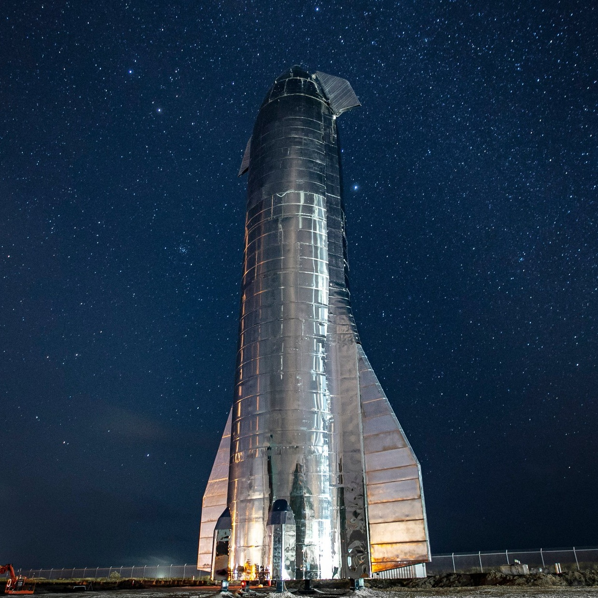
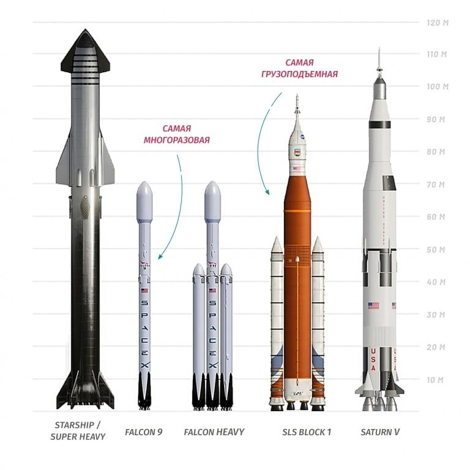
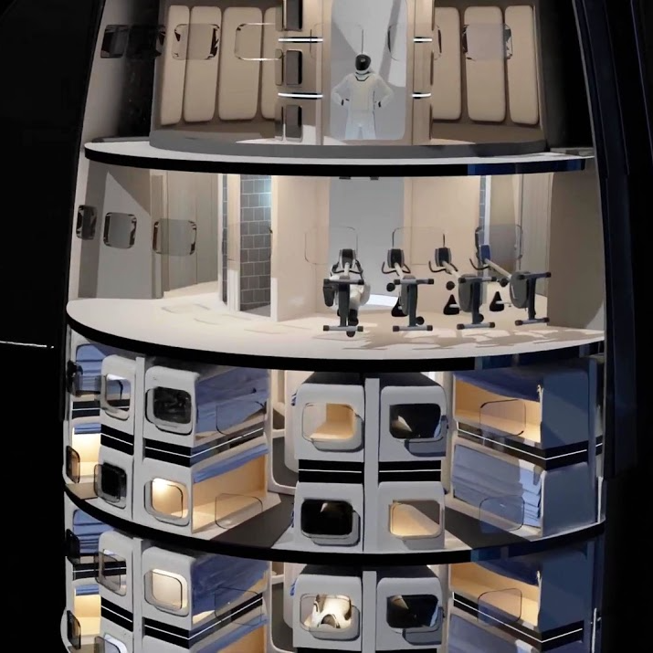

Корпорация Илона Маска с 2012 года разрабатывает космический корабль, который может изменить правила
игры в космической отрасли. Starship, как его называют, должен стать многоразовой транспортной системой,
способной доставить на Красную планету до 100 человек за раз.
Основополагающим принципом частной космической компании Илона Маска SpaceX заявлена цель сделать человечество
«многопланетным видом». Это отчасти мотивировано экзистенциальными угрозами, такими как столкновение Земли с астероидами,
которые способны полностью уничтожить жизнь и людей. Заселение других планет поместило бы часть яиц в другие корзины,
и человеческая цивилизация смогла бы выжить, если бы на Земле случился серьезный катаклизм. В 2016 году предприниматель
изложил свое мысли по этому поводу на международной конференции в Мексике: «История будет раздваиваться по
двум направлениям. Один путь – мы останемся на Земле навсегда, и тогда произойдет какое-то окончательное вымирание.
Либо есть альтернатива – стать космической цивилизацией, и я надеюсь, вы согласитесь, что это наиболее верный путь».
Маск часто говорил о своей мечте построить города на Марсе. Он считает, что поселениям потребуется большое число людей,
чтобы стать самодостаточными. Реализация этой мечты требует транспортного средства, которое соответствует поставленной
задаче. Звездолет Starship – комбинация ракеты и космического корабля, которая может перевозить более 100 человек за
один раз на Красную планету. Система предназначена для полного повторного использования, то есть основные аппаратные
элементы не выбрасываются в море и не сгорают, как это происходит с некоторыми другими системами запуска, а возвращаются
из космоса. Затем их можно отремонтировать и снова отправить в полет, снизив тем самым стоимость всего предприятия.

Что же это будет?
В отличие от предыдущих конструкций, Starship объединяет в себе две функции — второй ступени, используемой для достижения
орбитальной скорости при запуске с Земли, и многоразового космического аппарата, способного взлетать, выполнять полёт в
космическом пространстве и совершать управляемую посадку на Землю, Луну или Марс. Многоразовая сверхтяжёлая ракета-носитель
Super Heavy будет использоваться в качестве первой ступени только для взлёта с Земли.
Корабль будет доступен минимум в четырёх модификациях:
Космический корабль (англ. Starship) — полностью многоразовая транспортная система, предназначенная для
перевозки экипажа и грузов на околоземную орбиту, Луну, Марс и далее. Корабль использует сверхтяжёлую
ракету Super Heavy для разгона, доставляя грузы и экипажи на околоземную орбиту, и в состоянии
самостоятельно осуществить взлёт и посадку на Луну и Марс.
Лунный посадочный модуль (англ. Starship Lunar lander) — разрабатываемая по заказу НАСА версия пилотируемого корабля,
способного перевозить экипаж с низкой околоземной орбиты до лунной орбитальной станции Gateway и между станцией и
поверхностью Луны. Вместо аэродинамических рулей будут использоваться тормозные двигатели, что исключает его посадку на
планеты с плотным слоем атмосферы.
Топливный танкер (англ. Starship Tanker) для доставки топлива на орбиту, где предполагается разместить
топливные депо для дозаправки, необходимые для длительных перелётов.
Транспортный корабль (англ. Starship Cargo) с отсеком для полезной нагрузки больше, чем любой обтекатель,
который находится в эксплуатации или разработке, вплоть до очень больших аппаратов наподобие космического телескопа «Хаббл».

При запуске космический корабль Starship будет располагаться на сверхтяжелой ракете-носителе Super Heavy.
Комбинированная система достигнет 120 метров в высоту. Для сравнения: американская сверхтяжелая ракета-носитель «Сатурн-5»,
которую использовали для реализации пилотируемой посадки на Луну, была немного меньше – 110,6 метра. Таким образом,
Starship станет самой большой ракетой в истории американской космонавтики.
Сам космический корабль – длиной 50 метров с носовой частью и стабилизаторами ракетного ускорителя из нержавеющей стали –
напоминает ракетные корабли из золотого века научной фантастики. В нижней его части – шесть высокоэффективных двигателей Raptor,
разработанных в течение десятилетия компанией SpaceX. Сгорание топлива происходит поэтапно, и конструкция двигателя сокращает
количество топлива, которое тратится впустую.
Ближе к середине корабля расположены топливные баки. Они питают двигатели жидким метаном (СН4) и жидким кислородом (О2).
Метан – основное топливо, а кислород действует как окислитель – химическое вещество, заставляющее топливо гореть.
Эта комбинация получила название methalox. Выбор топлива необычен для ракетных двигателей, но метан способен генерировать большую тягу.
К тому же это разумный выбор в свете планов Маска, связанных с Марсом. Основатель SpaceX говорит, что CH4 можно синтезировать
из марсианской подземной воды и атмосферного углекислого газа (CO2) с помощью химического процесса, известного как реакция Сабатье.
Заправка Starship для возвращения на Землю с использованием марсианских ресурсов предоставила бы уровень самообеспеченности,
сделав путешествия более осуществимыми и экономически эффективными.
Предполагается, что Starship сможет поднять на низкую околоземную орбиту не менее 100 тонн полезной нагрузки, а возможно, и до 150 тонн.

В верхней части космического корабля, который иногда называют верхней ступенью, находится огромный отсек полезной нагрузки,
способный перевозить большие грузы или людей к местам назначения в глубоком космосе.
У обтекателя полезной нагрузки Starship диаметр девять метров и высота 18 метров, что дает самый большой полезный объем полезной
нагрузки из всех существующих или разрабатываемых космических кораблей. Его можно использовать как для экипажа, так и для груза.
Для дальних полетов на Марс и обратно, которые могут занять до девяти месяцев в одну сторону, Маск планирует установить около 40
кабин в зоне полезной нагрузки, рядом с передней частью разгонного блока. «В каждой каюте можно разместить по пять-шесть человек,
если вы хотите, чтобы люди жили скученно, – говорил Маск. – Но, я думаю, в основном мы ожидаем увидеть по два-три человека в кабине,
поэтому номинально около 100 человек для полета на Марс». В отсеке полезной нагрузки также расположатся общие и складские помещения,
камбуз и укрытие, где люди могли бы собираться, чтобы защититься от солнечных бурь, когда наше светило изрыгает с удвоенной энергией
потоки электронов, протонов и других заряженных частиц.
Для чего хотят использовать Starship
Starship способен сыграть определенную роль в программе NASA «Артемида», которая направлена на установление
долгосрочного присутствия человека на Луне.
Грузовая версия Starship имеет отсек полезной нагрузки, который открывается как пасть крокодила.
Это позволит использовать его для запуска спутников. В SpaceX считают, что огромная грузоподъемность
предоставит возможность для новых типов роботизированных научных миссий, включая телескопы большего размера,
как обсерватория имени Джеймса Уэбба
По словам Илона Маска, Starship в итоге сможет доставлять людей к местам назначения в «большой Солнечной системе»,
включая газовые гиганты, такие как Юпитер. Но это остается долгосрочной целью.